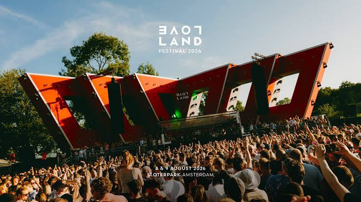

Case study / 2025
Loveland
Festival
Project overview
Loveland Festival is a two-day electronic music festival held at Sloterpark in Amsterdam. I work with Revolution Academy as an Entrance Supervisor, supporting the entrance operation across approximately 18 gates and acting as the operational link between ticket scanners, visitor flow and entrance management.
My role
Entrance
Supervision.
- Supervise ticket scanning operations across an assigned group of gates, supporting volunteers and paid crew throughout the live entrance period.
- Resolve ticket and access issues directly at the gates, guiding visitors to ticket support when an issue requires further assistance.
- Monitor visitor flow and gate distribution, helping balance queues and responding when individual lanes or buffer areas become congested.
- Maintain gate coverage during breaks and operational changes, coordinating with entrance management when additional support or repositioning is required.
- Monitor correct scanning and access procedures, ensuring visitors enter with valid scanned tickets and escalating irregularities when necessary.
- Support communication between ticket scanners and entrance management, identifying issues quickly and keeping the entrance operation moving during peak periods.
Project context
The entrance is divided across approximately 18 gates, with three supervisors each covering a dedicated section of the operation. My role stays close to the ticket scanners, providing immediate support when issues arise and maintaining an overview of queue distribution, gate coverage and the buffer area between ticket scanning and security.
During peak entrance periods, the focus shifts continuously between visitor flow and problem solving. Invalid or previously used tickets, access questions, attempted unauthorized entry and staffing needs are handled directly where possible, while situations requiring additional authority or ticketing support are escalated through the entrance structure.
Experience
Keeping the entrance moving when problems reach the gate.The role combines crew supervision, visitor flow, ticketing support and real-time problem solving within one of the most operationally active areas of a festival.
Gallery
Project material.
